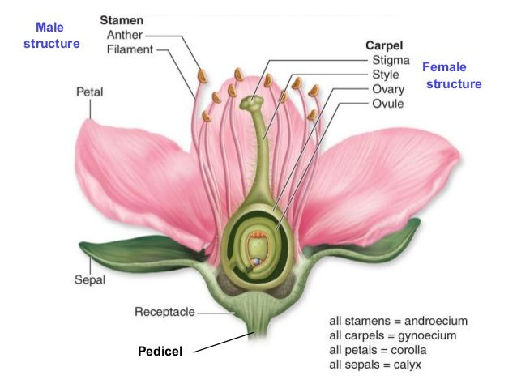

🌸 Parts of a Perfect Flower

- Petal: Attracts pollinators with color and scent.
- Sepal: Protects the bud before it blooms.
- Stamen: Male part of the flower – includes anther and filament.
- Anther: Produces pollen (male cells).
- Filament: Supports the anther.
- Carpel (Pistil): Female part – includes stigma, style, and ovary.
- Stigma: Sticky top that captures pollen.
- Style: Tube that leads from stigma to ovary.
- Ovary: Contains ovules (female cells).
- Ovule: Becomes the seed after fertilization.
- Receptacle: Base that connects all flower parts together.
- Pedicel: The stalk that attaches the flower to the stem.
🌿 Fun Fact: Did you know that flowers are actually the reproductive organs of flowering plants?
In fact, every flower is designed to attract pollinators like bees, butterflies, or even bats — not just to look pretty! Without flowers, fruits and seeds wouldn't exist.